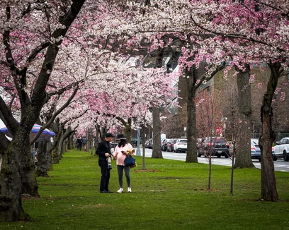
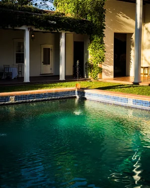

James D. Forrester is a British technologist, currently based between New York and London. He has worked for the Wikimedia Foundation non-profit since 2012, serving as the founding tech lead for the Abstract Wikipedia project, a multi-lingual knowledge initiative, since 2020.
Biography
Forrester's professional work sits at the intersection of open knowledge, open source, digital engagement, software engineering, and public-sector digital services.
At the Wikimedia Foundation, Forrester currently works on Abstract Wikipedia, which aims to make encyclopædic content available in many languages, especially under-resourced ones, by separating knowledge from the language in which it is expressed. It is powered by Wikifunctions, a wiki-controlled community lambda service for the Wikimedia movement.
In his career at Wikimedia, Forrester has worked in many roles, as a software engineer and technical product manager. The work has spanned devops, developer productivity, content services, the Structured Data on Commons project, and the VisualEditor project, amongst others.
Before the Foundation, Forrester was a British civil servant, working with the Government Digital Service (GDS), on data.gov.uk, and at related offices responsible for digital transformation across central government.
Outside of work, Forrester photographs architectures, city life, landscapes, and flora, and aims to publish them daily on social media; a selection is published on his portfolio. He maintains a strong interest in UK and US domestic national politics, geopolitics, governance, and statecraft more generally.
Forrester has contributed to many Wikimedia projects as a volunteer editor, starting with the English Wikipedia since 2002, where his focus has been on post-War British governmental figures, roles, and institutions. A strong believer in the power of interaction to bring people together, Forrester has attended every Wikimania conference since they started in 2005, presenting, connecting, and supporting fellow volunteers there alongside dozens of Hackathons, meetups, and other Wikimedia and wider open knowledge community events.
Career
- 2020–Present Software developer— Abstract Wikipedia, Wikimedia Foundation
- 2019–2020 Developer productivity— Release Engineering, Wikimedia Foundation
- 2018–2019 Structured Data on Commons— Product, Wikimedia Foundation
- 2014–2018 Lead Product manager— Contributors, Wikimedia Foundation
- 2012–2016 Technical product manager— Editing, Wikimedia Foundation
- 2005–2012 British civil servant— Government Digital Service, data.gov.uk, Cabinet Office, HM Treasury, HM Revenue and Customs, the Foreign and Commonwealth Office, the Crown Prosecution Service, etc.
Photography
Forrester photographs with his 'phone in the course of travel and daily life. His portfolio is organised by subject theme, rather than by year.
View the full photography portfolio jdforrester.myportfolio.comSelected works

